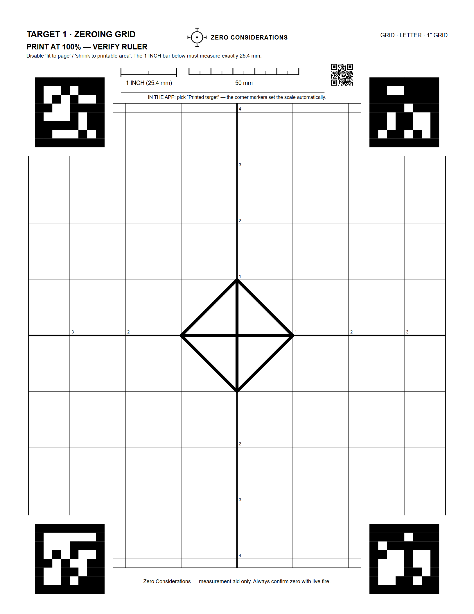
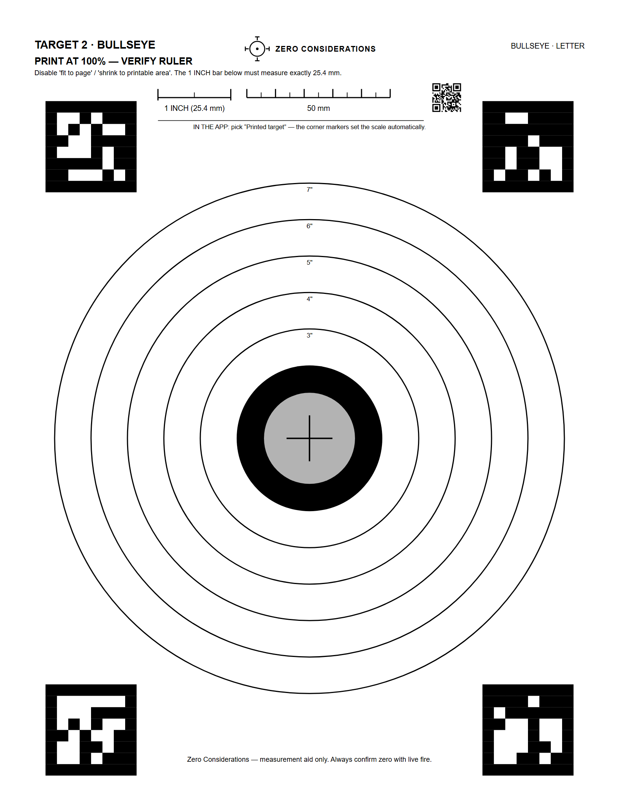
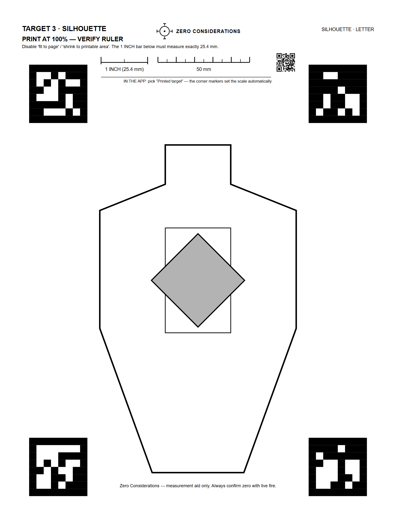
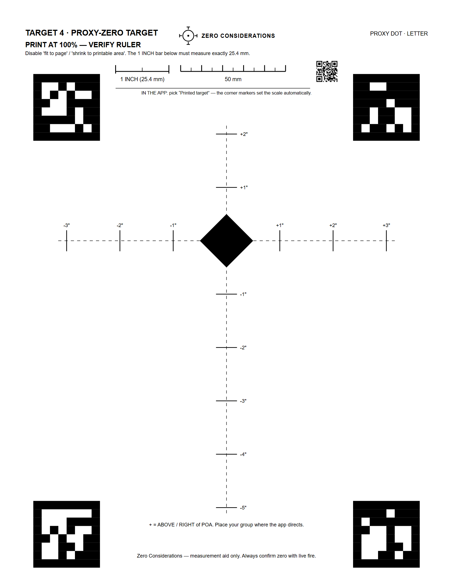

Four sight-in target styles as print-exact PDFs, free — no signup, no watermark. Every sheet carries a 1-inch and a 50 mm calibration ruler so you can confirm your printer didn't scale it, plus corner markers the Zero Considerations app uses to measure your shot group automatically. Print at 100% ("actual size") — never "fit to page."

Every square is exactly one inch — read your point-of-impact offset straight off the paper. The classic choice for scope click zeroing at 25, 50, or 100 yards.

Ringed 2-inch bull with ring diameters labeled in inches. A high-contrast classic for general zeroing and group testing at any distance.

IPSC-style torso with a precise 2-inch point-of-aim diamond. Built for defensive practice and positional shooting while still supporting exact measurement.

POA diamond with a vertical inch ladder — made for short-range proxy zeroing (like a 10-yard zero for a 50/200) where the ladder shows your intended offset directly.
Distance-by-distance guides — which target to print, what a zero at that line really means, and the three-shot photo workflow:
Strategy guides: the 36-yard zero · a 50-yard zero from the 25-yard line · 25 vs 100 · pistol red dots
Why the corner squares? They're ArUco registration markers. Photograph your shot-up target with the Zero Considerations app and the markers set the photo's scale and orientation automatically — the app measures your group and computes the turret clicks for your optic, no walking back and forth with a ruler.
Zero Considerations photographs this target after you shoot, measures the group, and tells you how many clicks to dial for your optic — then confirm with a group. No account, $9.99 once, no subscription. iPhone and Android.
App Store Google PlayOn Android, Google refunds any paid app within 48 hours — try it on your next range trip. Or wishlist it on Google Play and get notified if the price drops.